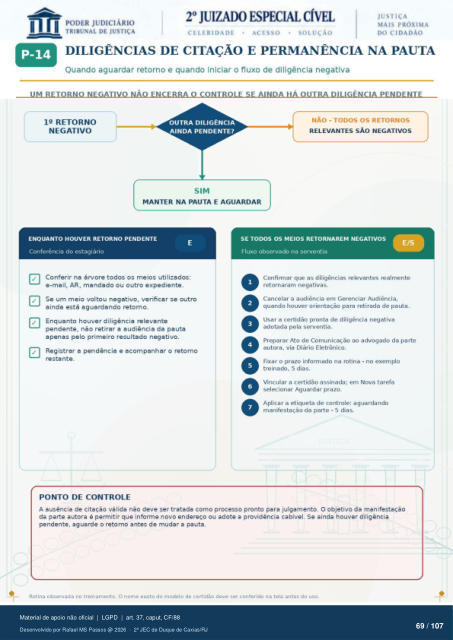

Transcrição automática em português, ainda não revisada. Confira grafia, prazos e termos jurídicos na imagem e no PDF antes de utilizar.
DILIGÊNCIAS DE CITAÇÃO E PERMANÊNCIA NA PAUTA
Quando aguardar retorno e quando iniciar o fluxo de diligência negativa UM RETORNO NEGATIVO NÃO ENCERRA O CONTROLE SE AINDA HÁ OUTRA DILIGENCIA PENDENTE
12 RETORNO
NEGATIVO
OUTRA DILIGÊNCIA
AINDA PENDENTE?
SIM
MANTER NA PAUTA E AGUARDAR
NÃO - TODOS OS RETORNOS
RELEVANTES sÀo NEGATIVOS
ENQUANTO HOUVER RETORNO PENDENTE
Conferência do estagiário Conferir na árvore todos os meios utilizados:
e-mail, AR, mandado ou outro expediente. Se um meio voltou negativo, verificar se outro
ainda está aguardando retomo. Enquanto houver diligência relevante
pendente, nao retirar a audiência da pauta apenas pelo primeiro resultado negativo.
Registrar a pendência e acompanhar o retomo resta nte.
PONTO DE CONTROLE
SE TODOS OS MEIOS RETORNAREM NEGATIVOS
Fluxo observado na serventia Confinnar que as diligências relevantes realmente
retornaram negativas. Cancelar a audiência em Gerenciar Audiência,
quando houver orientação para retirada de pauta. Usar a certidão pronta de diligência negativa
adotada pela serventia. Preparar Ato de Comunicação ao advogado da parte
autora, via Diário Eletrônico. Fixar o prazo informado na rotina - no exemplo
treinado, 5 dias. Vincular a certidão assinada; em Nova tarefa
selecionar Aguardar prazo. Aplicar a etiqueta de controle: aguardando
manifestação da parte - 5 dias. A ausência de citação válida não deve ser tratada como processo pronto para julgamento. O objetivo da manifestação
da parte autora é permitir que informe novo endereço ou adote a providência cabível. Se ainda houver diligencia pendente, aguarde o retomo antes de mudar a pauta.
Rotina observada no treinamento. O nome exato do modelo de certidão devo ser conferido na tola antes do uso.
Ver também o infográfico original (página 69)
